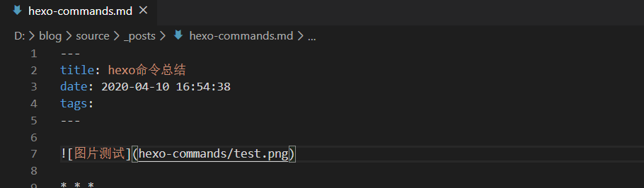

参数 描述 默认值
layout 布局
title 标题
date 建立日期 文件建立日期
updated 更新日期 文件更新日期
comments 开启文章的评论功能 true
tags 标签（不适用于分页）
categories 分类（不适用于分页）
permalink 覆盖文章网址Welcome to Hexo! This is your very first post. Check documentation for more info. If you get any problems when using Hexo, you can find the answer in troubleshooting or you can ask me on GitHub.
Quick Start
version—–显示 Hexo 版本
$ hexo version安全模式——在安全模式下，不会载入插件和脚本。当您在安装新插件遭遇问题时，可以尝试以安全模式重新执行
$ hexo --safeCreate a new post———-创建新文章
$ hexo new "My New Post"More info: Writing
Run server——————–运行服务器
$ hexo server
选项 描述
-p, --port 重设端口
-s, --static 只使用静态文件
-l, --log 启动日记记录，使用覆盖记录格式More info: Server
Generate static files———生成静态文件
$ hexo generate
可以简写为 $ hexo g
$ hexo -d
-d, --deploy 文件生成后立即部署网站
$ hexo -w
-w, --watch 监视文件变动More info: Generating
clean——清除缓存文件 (db.json) 和已生成的静态文件 (public)。在某些情况（尤其是更换主题后），如果发现您对站点的更改无论如何也不生效，您可能需要运行该命令
$ hexo cleanDeploy to remote sites——-部署到远程站点
$ hexo deployMore info: Deployment
init————-新建一个网站
$ hexo init [folder]list—–列出网站资料
$ hexo list <type>publish—————–发表草稿
$ hexo publish [layout] <filename>自定义配置文件的路径—–自定义配置文件的路径，执行后将不再使用 _config.yml
$ hexo --config custom.ymlmigrate——–从其他博客系统 迁移内容
$ hexo migrate <type>分类和标签—–只有文章支持分类和标签，您可以在 Front-matter 中设置。在其他系统中，分类和标签听起来很接近，但是在 Hexo 中两者有着明显的差别：分类具有顺序性和层次性，也就是说 Foo, Bar 不等于 Bar, Foo；而标签没有顺序和层次。
categories:
- Diary
tags:
- PS3
- Games引用块—–在文章中插入引言，可包含作者、来源和标题
{% blockquote [author[, source]] [link] [source_link_title] %}
content
{% endblockquote %}插入链接
<%- link_to(path, [text], [options]) %>
参数 描述 默认值
external 在新视窗打开链接 false
class Class 名称
id ID 插入电子邮箱链接。
<%- mail_to(path, [text], [options]) %>
参数 描述
class Class 名称
id ID
subject 邮件主题
cc 抄送（CC）
bcc 密送（BCC）
body 邮件内容插入图片。
<%- image_tag(path, [options]) %>
参数 描述
alt 图片的替代文字
class Class 名称
id ID
width 图片宽度
height 图片高度插入分页链接。
<%- paginator(options) %>
参数 描述 默认值
base 基础网址 /
format 网址格式 page/%d/
total 分页总数 1
current 目前页数 0
prev_text 上一页链接的文字。仅在 prev_next 设定开启时才有用。 Prev
next_text 下一页链接的文字。仅在 prev_next 设定开启时才有用。 Next
space 空白文字 …
prev_next 显示上一页和下一页的链接 true
end_size 显示于两侧的页数 1
mid_size 显示于中间的页数 2
show_all 显示所有页数。如果开启此参数的话，end_size 和 mid_size 就没用了。 false
search_form插入 Google 搜索框。
<%- search_form(options) %>
参数 描述 默认值
class 表单的 class name search-form
text 搜索提示文字 Search
button 显示搜索按钮。此参数可为布尔值（boolean）或字符串，当设定是字符串的时候，即为搜索按钮的文字。 false